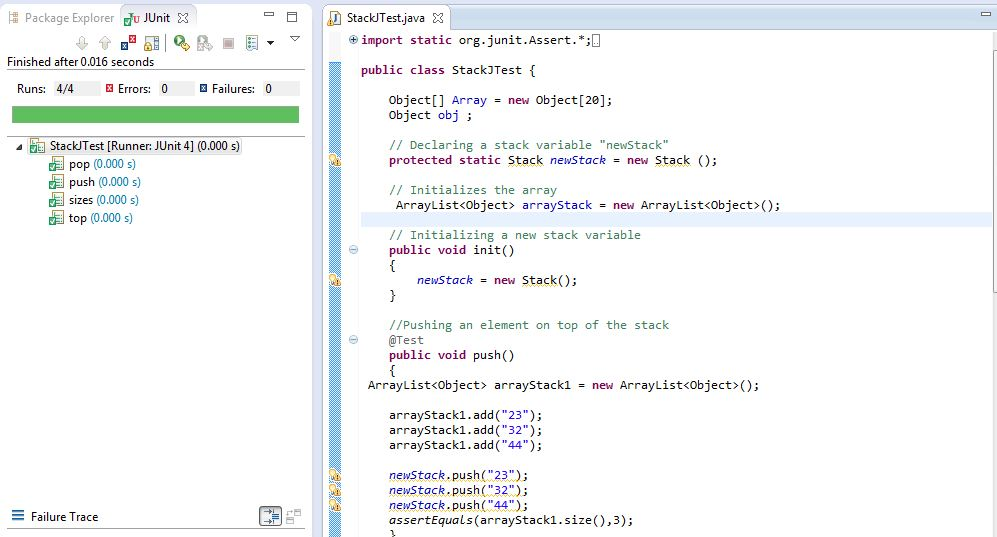

Planning Document
Scope: (Ex. 6.3) : To design an interface for a stack, which supports the push, pop, size and top methods and to formally specify the contract of each method.
(Ex. 6.5): To design and implement a class that implements the Stack interface using an array; To formally specify the invariants of the class; To use assertions to ensure that the invariants and contracts hold at run time; To design and implement test cases for unit testing using JUnit.
Level : User goal
Primary Actor: User who loads the page to view the stack applet and perform the stack operations.
Stakeholders and Interests:
-Person who loads the web page
Is interested to successfully load the Stack Applet and perform the stack operations using the same.
Pre-conditions:
Internet connection is
established.
The web page is loaded
successfully.
The applet is loaded successfully.
Success Guarantee - Post Conditions:
The Stack Applet is loaded successfully and the stack operations are performed with precision.
Main Success Scenario (or Basic Flow):
1. User clicks on the link directing to the Stack Applet.
2. The web page with the atck applet opens.
3. The contents of the applet are displayed and the user performs the stack operations push, pop, top and size of the stack and the applet returns the right values to the user.
Extensions or Alternative Flows:
1.
At any time, the internet connection is lost.
a.
Error message displayed requesting the user
to check his internet connection.
2.
The user clicks the back button before the program is loaded fully.
b.
The program terminates and the previous web
page is displayed.
/**
*
*/
//package Week7;
import java.util.Stack;
/**
*
@author
Janani Swaminathan
*
@version
1.0
*
@since
10/05/2012
*/
@SuppressWarnings("serial")
public interface StackOperation {
/**
*
Method to add new object to the stack
*
@pre @obj != null
*
@post @nochange
*/
@SuppressWarnings("unchecked")
public void push(Object obj);
/**
*
To remove(delete) element from top of stack
*
@pre
@result != null
*
@post @nochange
*/
public Object pop ();
/**
*
To return the number of objects currently in the stack
*
@pre true
*
@post @result >= 0
*/
public int sizes();
/**
*
To return the top of stack element without deleting it
* @pre
true
*
@post @result != null
*/
public Object top();
}
Click here to view the
Ex. 6.5
Working Applet
Click on
to view the Javadoc
SOURCE CODE
/**
*
*/
import
java.applet.Applet;
import java.awt.*;
import
java.awt.event.*;
import javax.swing.*;
import java.util.*;
/**
*
@author
Janani Swaminathan
*
@version
1.0
*
@since
10/05/2012
*
@param
position
*
Initial index value of the stack
*
@param
newStack
*
Stack for storing the list
*
@param
arrayStack
*
Array List
*/
@SuppressWarnings("serial")
public
class
StackApplet extends
JApplet implements
ActionListener,
StackOperation
{
JTextField
text1;
JButton
button1, button2;
JButton but1,
but2, but3, but4;
JLabel label1;
JTextArea
Tarea;
StackApplet e;
Object[] Array
= new
Object[20];
Object obj;
int
position = -1; //
position of the stack pointer is initialized to -1
// Declaring a
stack variable "newStack"
protected
static
Stack newStack =
new Stack();
// Initializes the
array
protected
static
ArrayList<Object> arrayStack =
new
ArrayList<Object>();
/**
* Called by the browser or applet
viewer to inform this applet that it has
* been loaded into the system. It is
always called before the first time
* that the
<code>start</code>
method is called.
*
<p>
* A subclass of
<code>Applet</code>
should override this method if it has
* initialization to perform. For
example, an applet with threads would use
* the
<code>init</code>
method to create the threads and the
*
<code>destroy</code>
method to kill them.
*
<p>
* The implementation of this method
provided by the
<code>Applet</code>
* class does nothing.
*
*
@see
java.applet.Applet#destroy()
*
@see
java.applet.Applet#start()
*
@see
java.applet.Applet#stop()
*/
public
void
init() {
e =
this;
Pane p =
new
Pane();
getContentPane().add(p);
but1.addActionListener(this);
but2.addActionListener(this);
but3.addActionListener(this);
but4.addActionListener(this);
}
class
Pane extends
JPanel {
/**
* Pane Override method is for
setting the grid and the layout property
*
*/
public
Pane() {
setBorder(BorderFactory.createEmptyBorder(100, 80, 100, 80));
setMaximumSize(new
Dimension(1, 3));//
set maximum size
label1 =
new
JLabel("Enter the
elements one in a row!");
add(label1);
text1 =
new
JTextField(10);
add(text1);
setLayout(new
GridLayout(4, 3));
but1 =
new
JButton("Push");
add(but1);
but2 =
new
JButton("Pop");
add(but2);
but3 =
new
JButton("Top
Element");
add(but3);
but4 =
new
JButton("Size of
stack");
add(but4);
Tarea =
new
JTextArea(8, 8);
add(Tarea);
}
}
/**
* Method to add new object to the
stack
*/
@SuppressWarnings("unchecked")
public
void
push(Object obj)
{
assert
obj != null;
newStack.push(obj);
assert
(newStack.peek() == obj);
arrayStack.add(obj);
}
/**
* To remove(delete) element from top
of stack
*
*
@return
obj returns the object removed
*/
public
Object pop() {
Object obj =
null;
Object objtemp
= null;
obj =
newStack.pop();
// objtemp
now becomes the Top of Stack
objtemp =
arrayStack.get(arrayStack.size() - 1);
arrayStack.remove(arrayStack.size() - 1);
assert
obj != null;
return
obj;
}
/**
* To return the number of objects
currently in the stack
*
*
@return
stackSize returns the size of the stack
*/
public
int
sizes() {
int
stackSize = 0;
stackSize =
arrayStack.size();
assert
stackSize >= 0;
return
stackSize;
}
/**
* To return the top of stack element
without deleting it return obj returns
* the object removed
*/
public
Object top() {
Object obj =
null;
if
(newStack.size() > 0) {
obj =
newStack.peek();
}
if
(arrayStack.size() > 0) {
}
assert
obj != null;
return
obj;
}
/**
* Method to handle the events and
display the results in the text area
*/
public
void
actionPerformed(ActionEvent ae) {
Tarea.setText("");
if
(ae.getActionCommand() == but1.getActionCommand()) {
String val =
text1.getText();
if
(val != " ")
{
push(val);
}
Tarea.append("Value
pushed to stack: " +
val + "\n"
+ "\n");
Tarea.append("Stack
List " +
"\n"
+ arrayStack.toString());
}
if
(ae.getActionCommand() == but2.getActionCommand()) {
String poped =
(String) pop();
Tarea.append("Top
of stack element removed "
+ poped + "\n"
+ "\n");
Tarea.append("Stack
List " +
"\n"
+ arrayStack.toString());
}
if
(ae.getActionCommand() == but3.getActionCommand()) {
String topval
= (String) top();
Tarea.append("Top
of stack element: " +
topval + "\n"
+ "\n");
Tarea.append("Stack
List " +
"\n"
+ arrayStack.toString());
}
if
(ae.getActionCommand() == but4.getActionCommand()) {
Tarea.append("Size
of the stack: " +
sizes() + "\n"
+ "\n");
Tarea.append("Stack
List " +
"\n"
+ arrayStack.toString());
}
text1.setText("");
}
}
STACK IMPLEMENTATION OF INTERFACE WITH CONTRACTS AND INVARIANTS
/**
*
*/
//package Week7;
import java.util.*;
/**
*
@author Janani
*
*/
public class ArrayImpStack implements StackOperation
{
Object[] Array = new Object[20];
Object obj;
int position = -1; // position of the stack pointer is initialized to -1
// Declaring a stack variable "newStack"
protected static Stack newStack = new Stack();
// Initializes the array
protected static ArrayList<Object> arrayStack = new ArrayList<Object>();
// Initializing a new stack variable
public void init() {
newStack = new Stack();
}
// Pushing an element on top of the stack
public void push(Object obj) {
assert obj != null;
newStack.push(obj);
assert (newStack.peek() == obj);
arrayStack.add(obj);
}
// Popping an element from the top of the stack
public Object pop() {
Object obj = null;
Object objtemp = null;
obj = newStack.pop();
// objtemp now becomes the Top of Stack
objtemp = arrayStack.get(arrayStack.size() - 1);
arrayStack.remove(arrayStack.size() - 1);
assert obj != null;
return obj;
}
// Finding the number of elements in the stack
public int sizes() {
int stackSize = 0;
stackSize = arrayStack.size();
assert stackSize >= 0;
return stackSize;
}
// Returning the top of stack element without deleting it
public Object top() {
Object obj = null;
if (newStack.size() > 0) {
obj = newStack.peek();
}
if (arrayStack.size() > 0) {
}
assert obj != null;
return obj;
}
SOURCE CODE - JUNIT
import static org.junit.Assert.*;
import org.junit.Test;
import java.util.*;
public class StackJTest {
Object[] Array = new Object[20];
Object obj ;
// Declaring a stack variable "newStack"
protected static Stack newStack = new
Stack ();
// Initializes the array
ArrayList<Object>
arrayStack = new ArrayList<Object>();
// Initializing a new stack variable
public void init()
{
newStack = new Stack();
}
//Pushing an element on top of the stack
@Test
public void push()
{
ArrayList<Object>
arrayStack1 = new ArrayList<Object>();
arrayStack1.add("23");
arrayStack1.add("32");
arrayStack1.add("44");
newStack.push("23");
newStack.push("32");
newStack.push("44");
assertEquals(arrayStack1.size(),3);
}
// Popping an element from the top of the
stack
@Test
public void pop()
{
ArrayList<Object>
arrayStack2 = new ArrayList<Object>();
arrayStack2.add("23");
arrayStack2.add("32");
arrayStack2.add("44");
newStack.push("23");
newStack.push("32");
newStack.push("44");
assertEquals("44", newStack.pop() );
assertEquals("32", newStack.pop() );
}
// Finding the number of elements in the
stack
@Test
public void sizes()
{
arrayStack.add("1");
newStack.push("1");
assertEquals(1, arrayStack.size());
arrayStack.add("a");
newStack.push("a");
assertEquals(2, arrayStack.size());
arrayStack.add("3");
newStack.push("3");
assertEquals(3, arrayStack.size());
}
// Returning the top of stack element
without deleting it
@Test
public void top() {
ArrayList<Object>
arrayStack3 = new ArrayList<Object>();
arrayStack3.add("23");
arrayStack3.add("32");
arrayStack3.add("44");
newStack.push("23");
newStack.push("32");
newStack.push("44");
assertEquals("44", newStack.peek());
}
}

Timesheet
| Janani Swaminathan Timesheet Week 6 | |||
| Date | Time | Task | Time Spent (Hrs) |
| 11-Oct-12 | 8:00 PM | Analysis of the requirement | 1 |
| 12-Oct-12 | 3:00 PM | Planning documentation, JUnit tutorial | 3 |
| 13-Oct-12 | 5:30 PM | Coding applet and executing it HTML Coding for the web page & applets |
3 |
| 14-Oct-12 | 5:00 PM | JUnit Testing, Testing on different OSs | 2 |
| 18-Oct-12 | 4:00 PM | Uploading
files on the server |
1 |
| Total Time Spent | 10 |
http://docs.oracle.com/javase/1.4.2/docs/api/java/util/Stack.html
http://docs.oracle.com/cd/E19683-01/806-7930/assert-13/index.html
http://docs.oracle.com/javase/1.4.2/docs/guide/lang/assert.html